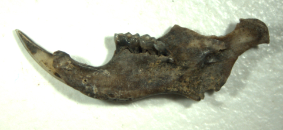

Commensals are synanthropic animal species that utilize the modified or constructed environment of human habitations for living space or food. Archaeological studies on commensal species can inform how sites were used, indicate abandonment and provide needed contributions to biogeographical studies of modern distributions, abundance of species and conservation of species in rapid decline. Zooarchaeological discussions of Roman Britain are largely focused on the diet and economies of the past. Silchester (Calleva Atrebatum) is one of six Roman towns in Britain that is unpopulated today and the spatial and temporal characteristics of the town’s abandonment is not fully understood. By detailed assessment of the faunal assemblage of Insula III and comparison to other assemblages at Silchester and other large Roman towns, it was found that commensal community varies between towns and calls for more careful identification and assessment of small animals and birds. However, the presence of black rat, wood mice and house sparrows at Silchester indicated continued occupation and trade into the 4th century A.D., indicating the value these small mammals have in future zooarchaeological research.